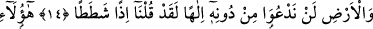

RABLERİNE İNANMIŞ GENÇLER
13. Biz sana onların başından geçenleri gerçek olarak anlatıyoruz. Hakîkaten
onlar, Rablerine inanmış gençlerdi. Biz de onların hidâyetini arttırdık.
14. Onların kalplerini metîn kıldık. O yiğitler (o yerin hükümdarı karşısında)
ayağa kalkarak dediler ki: “Bizim Rabbimiz, göklerin ve yerin Rabbidir. Biz,
O’ndan başkasına ilah demeyiz. Yoksa saçma sapan konuşmuş oluruz.
15. Şu bizim kavmimiz Allah’tan başka tanrılar edindiler. Bâri bu tanrılar
konusunda açık bir delil getirseler. (Ne mümkün!) Öyle ise Allah hakkında yalan
uydurandan daha zalimi var mı?
16. (İçlerinden biri şöyle demişti:) “Mâdem ki siz onlardan ve onların Allah’ın
dışında tapmakta oldukları varlıklardan uzaklaştınız, o halde mağaraya sığının ki,
Rabbiniz size rahmetini yaysın ve işinizde sizin için fayda ve kolaylık sağlasın.”
17. (Rasûlüm! Orada bulunsaydın) güneşi görürdün: Doğduğu zaman
mağaralarının sağına meyleder; batarken de sol taraftan onlara isâbet etmeden
geçerdi. (Böylece) onlar (güneş ışığından rahatsız olmaksızın) mağaranın bir
köşesinde (uyurlardı). İşte bu, Allah’ın âyetlerindendir. Allah kime hidâyet ederse,
işte o, hakka ulaşmıştır, kimi de hidâyetten mahrum ederse artık onu doğruya
yöneltecek bir dost bulamazsın.
“Biz sana onların” Kehf ve Rakîm ashâbının “başından geçenleri gerçek” hak ve
doğru “olarak anlatıyoruz.” bildiriyoruz. Burada işaret vardır ki onların hikâyesini